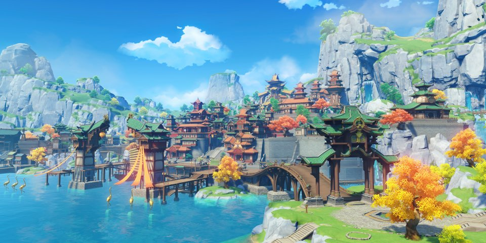
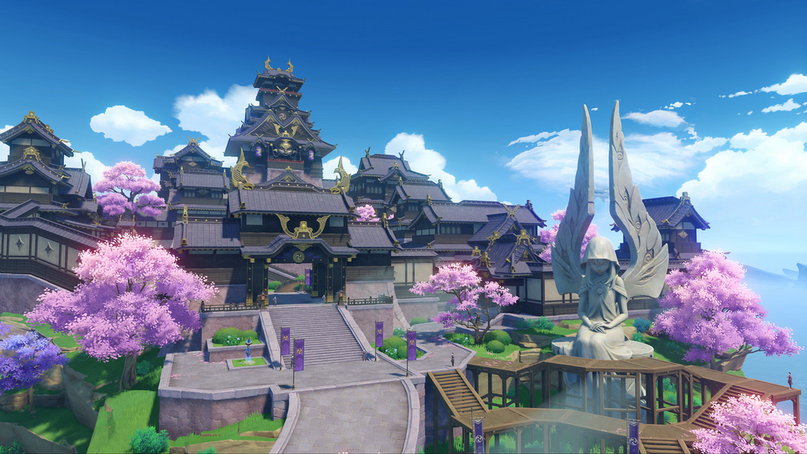

You have arrived in Teyvat — a fantasy world where the seven elements flow and converge. In the distant past, the Archons granted mortals unique elemental abilities. With the help of such powers, people formed a bountiful homeland out of the wilderness. However, 500 years ago, the collapse of an ancient civilization turned the universe upside down... Though the calamity the world suffered has ceased, peace has yet to be restored.
Mondstatd - A city of freedom that lies in the northeast of Teyvat. From amongst mountains and wide - open plains, carefree breezes carry the scent of dandelions-a gift from the Anemo God, Barbatos - across Cider Lake to Mondstadt, which sits on an island in the middle of the lake.
Liyue - A prosperous port city where a thousand ships drop anchor. Under the aegis of countless contracts and regulations, innumerable goods change hands and grace the seven nations with their presence. Welcome to Liyue, wayfaring Traveler.
Inazuma - An Isolated Archipelago Far East of Teyvat Overcome endless thunderstorms and set foot on the islands of red maple and cherry blossoms. On winding shores and towering cliffs, and in forests and mountains full of secrets, witness the Eternity pursued by Her Excellency, the Almighty Narukami Ogosho.